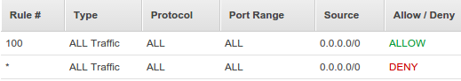
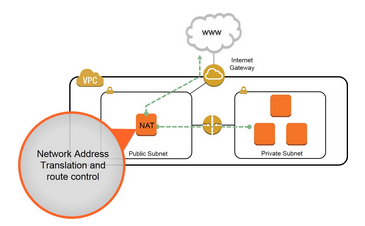

DevOps / Sys Admin Q & A #6 : Setting up AWS VPC with NAT without using VPC Wizard
We'll create a /16 network with two /24 subnets.
Public subnet instances use Elastic IPs to access the Internet.
Private subnet instances access the Internet via Network Address Translation (NAT).
Amazon VPC enables us to launch Amazon Web Services (AWS) resources into a virtual network that we've defined.
It is logically isolated from other virtual networks in the AWS cloud.
- Default VPC:
When we launch an instance, the instance is launched into our default VPC. A default VPC that has a default subnet in each Availability Zone.
Our default VPC includes an Internet gateway, and each default subnet is a public subnet.
Each instance that we launch into a default subnet has a private IP address and a public IP address.
These instances can communicate with the Internet through the Internet gateway.
An Internet gateway enables our instances to connect to the Internet through the Amazon EC2 network edge. - Nondefault VPC:
We can configure our own VPC.
In other words, we can select its IP address range, create subnets, and configure route tables, network gateways, and security settings.
By default, each instance that we launch into a nondefault subnet has a private IP address without any public IP address.
A video to watch AWS reinvent 2015 - VPC Fundamentals..
Though we're not going to use VPC Wizard that AWS provides, it is shown in the picture below just for reference.

In addition to containing a public subnet, this configuration adds a private subnet whose instances are not addressable from the Internet. Instances in the private subnet can establish outbound connections to the Internet via the public subnet using Network Address Translation (NAT).
However, in this article, we'll do it manually rather than using the Wizard tools!
We'll use the Classless Inter-Domain Routing (CIDR) block format to specify our VPC's contiguous IP address range, for example, 10.0.0.0/16 ip address (RFC1918) private range for our VPC.
Note that the /16 is the biggest (64K addresses) range that AWS provides. We cannot create a VPC larger than /16.
We chose /16 even though we do not need that big IP range right now. That's not just because we want to have the range flexible but because we CANNOT change(resize) it later once it's setup.
One thing we should be careful is to avoid range that may conflict(overlap) with other networks (data center or other VPCs) to which we might connect.
Each subnet is constructed in different availability zones. Note that we can setup multiple subnets in each availability zone.
Reserved IP addresses - RFC 1918
| Address block (CIDR) | Range | Number of Addresses | Scope | Purpose |
|---|---|---|---|---|
| 10.0.0.0/8 | 10.0.0.0 - 10.255.255.255 | 16,777,216 | private network | Used for local communications within a private network as specified by RFC 1918 |
| 172.16.0.0/12 | 172.16.0.0 - 172.31.255.255 | 1,048,576 | private network | Used for local communications within a private network as specified by RFC 1918 |
| 192.168.0.0/16 | 192.168.0.0 - 192.168.255.255 | 65,536 | private network | Used for local communications within a private network as specified by RFC 1918 |
Table source : Reserved IP addresses
As explained in earlier sections, a VPC is an isolated portion of the AWS cloud populated by AWS objects, such as Amazon EC2 instances.
Let's create a virtual private cloud (VPC) of size /16 (example CIDR: 10.0.0.0/16). This provides 65,536 private IP addresses.
When the vpc-1 is created, a route table will also be created:
Note that no subnet is not associated with the route table yet:
Now, we have two VPCs: the default VPC that's already been there and a nondefault VPC (vpc-1) we've just created:
When we launch an EC2 instance, AWS automatically puts it into a default VPC and assigns a public ip to the instance.
The following picture shows default subnets initially given by AWS under 172.31.0.0/16 (the default VPC), which we can use as a reference:
Now we're about to create our own subnets.
Here is our plan:
- /16 VPC (64K addresses) - we'v already create this VPC.
- /24 subnets (251 addresses)
- 2 subnet (public/private) into the same Availability Zone
OK, here is our first subnet (10.0.0.0/24) in vpc-1 which is public subnet:
We can create a private subnet (10.0.1.0/24) as well.

Now, we have newly created two subnets inside the newly created VPC (vpc-1):
- A public subnet of size /24 (example CIDR: 10.0.0.0/24). This provides 256 (actually 251) IP addresses.
- A private subnet of size /24 (example CIDR: 10.0.1.0/24). This provides 256 (actually 251) IP addresses.
The /24 gives us 251 addresses. Though 2^8=256 addresses should be available, but 2 of them (10.0.0.0 and 10.0.0.255) have been set aside for network and broadcast. The other 3 addresses are for AWS internals.
Route tables:
- Route tables contain rules for which packets to where.
- Our VPC has a default route table. Any additional subnets that we create use the main route table by default, which means that they are private subnets by default. If we want to make a subnet public, we can always change the route table that it's associated with.
- However, we can assign different route tables to different subnets.
Our subnet's default route table (highlighted table which is for vpc-1) looks like this:
We can see the main route table for a VPC by looking for Yes in the Main column. The main route table controls the routing for all subnets that are not explicitly associated with any other route table.
We can add, remove, and modify routes in the main route table.
The local under Routes tab tells all traffic destined (10.0.0.0/16) for our VPC to stay in our VPC. In other words, all the packets are moving within our VPC not going anywhere but to other EC2 instances within our VPC. They are routed locally.
As we can see, the route table contains an entry that enables instances in the subnet to communicate with other instances in the VPC.
Later, we'll put an entry that enables instances in the subnet to communicate with the Internet through the NAT instance.
So, our packets targeted to outside of our VPC will get dropped since we do not have any rule for it.
But we want a VPC that's connected to the internet: we need rules how to deal with packets heading outside of our VPC.
Let's work on Internet Gateway. An Internet gateway is a virtual router that connects a VPC to the Internet.
Here is our newly created Internet Gateway.
Now we have a new rule for traffics destined for the internet, and put it into our route table we created in the previous section.
But we can see it's not associated any VPC yet.
To use it, we need to associate it with our VPC, vpc-1:
Now the Internet Gateway (igw-vpc-1) is attached to our VPC (vpc-1):
We may want to rename our route table as main, and create another one for public subnet, name it as custom:

Now that our VPC has an Internet Gateway (igw), let's make our route table to have internet bound rule.
The rule 0/0 says that everything that isn't destined for the VPC, send it to the internet.

Our custom route table is now associated with the public subnet (On the Subnet Associations tab, choose Edit):
This route table contains an entry that enables instances in the subnet to communicate with other instances in the VPC (via local), and an entry that enables instances in the subnet to communicate directly with the Internet (via igw):

VPC provides two ways of authorizing traffics and here is the diagram:

- Network ACL (Access Control List): stateless (responses to allowed inbound traffic are subject to the rules for outbound traffic and vice versa) firewall rules.
AWS' VPC automatically comes with a modifiable default network ACL. By default, it allows all inbound and outbound traffic. We can create a custom network ALC and associate it with a subnet. Each custom network ACL denies all inbound and outbound traffic until we add rules. Only one subnet can be associated with a network ACL.
Staleless means it applies blindly whether packets are from established connection or not. In other words, when creating our rules, we may need to apply an outbound reply rule to permit responses to inbound requests - if desired.
To create an ACL from the AWS Console, select 'VPC > Network ACLs > Create Network ACL'. Enter a name for ACL and select the VPC in which we want it to reside. Then select 'Yes, Create'.
AWS Network ACLs are the network equivalent of the security groups we've seen attached to EC2 instances.
We can attach an ACL to one or more subnets within our Virtual Private Cloud (VPC). Note that it can be applied on a subnet basis.
Look at the ACLs for Inbound Rules below, then we can see we're not doing any special.

We can notice that the AWS Network ACL rule base works much the same way as the rules within security groups. However, ACL rules include an additional field called 'Rule #', which allows us to number our rules.
This is important, because ACL rules are read in ascending order, with each rule applied against matching packets regardless of whether a later rule might also match. In other words, the numbered list of rules are evaluated in order, starting with the lowest numbered rule, to determine whether traffic is allowed in or out of any subnet associated with the network ACL. So, as soon as a rule matches traffic, it's applied regardless of any higher-numbered rule that may contradict it.
For this reason, we should carefully sequence our rules with an organized numbering system.
AWS recommends us to start by creating rules with rule numbers that are multiples of 100, so that we can insert new rules where we need to later on.
From the above example, we will also notice that each list includes a final entry with an asterisk (*) in the 'Rule #' column, rather than a number.
This rule with (*) appears at the end of every rule base and cannot be modified or removed.
Its job is to act as an automatic fail-safe, to ensure that traffic that doesn't match any of our custom ACL rules is dropped.
In other words, the 2nd entry in the table means Denying all traffic not already handled by a preceding rule.
- Security Groups: stateful firewall rules.
With stateful rules, if we send a request from our instance, the response traffic for that request is allowed to flow in regardless of inbound security group rules, which also means that responses to allowed inbound traffic are allowed to flow out, regardless of outbound rules.
Our Security Groups will follow the picture below:
We created two groups: Weberver Security Group and Backends Security Group.
Weberver Security Group:
Backends Security Group:

MyBackends Security Group, only the instances in the MyWebServers Security Group can reach instances in MyBackends Security Group. Also, note that we used the MyWebServers Security Group as Source. We also added ICMP and SSH just for testing packet traffics.
Brief notes on Security Groups in VPCs (AWS reinvent 2015 - VPC Fundamentals):
- VPC allows creation of egress as well as ingress security group rules.
- Best practice: whenever possible, specify allowed by reference (other security groups).
- Many application architectures lend themselves to a 1:1 relationship between security groups (who can reach me) and AWS Identity and Access Management(IAM) roles (what I can do).
Let's put an instance into our public subnet (we named it as Public subnet) linked with WebServerSG security group, and we may want to attach EIP to our web server:
We can use ssh to login to the instance:
$ ssh -i einsteinish.pem ubuntu@34.200.214.166 ... ubuntu@ip-10-0-0-197:~$
We can check a google.com:80 which is outside of VPC:
ubuntu@ip-10-0-0-197:~$ nmap -p 80 google.com ... rDNS record for 172.217.8.14: iad23s59-in-f14.1e100.net PORT STATE SERVICE 80/tcp open http Nmap done: 1 IP address (1 host up) scanned in 0.05 seconds
Now that we just placed an instance into public subnet, it's time to put an instance into Private subnet linked with BackendsSG security group:
This instance (10.0.1.53) is in private subnet and does not have public ip. The security group allows only inbound traffic from the Servers within our VPC (vpc-1). So, at least we can ping this instance from an instance (10.0.0.197) in public subnet.
ubuntu@ip-10-0-0-197:~$ ping 10.0.1.53 PING 10.0.1.53 (10.0.1.53) 56(84) bytes of data. 64 bytes from 10.0.1.53: icmp_seq=1 ttl=64 time=0.307 ms
But any packets from this private subnet instance targeting outside cannot go out and will be dropped.
We want to set different route tables for different subnets.
Instances in a public subnet can reach out to the internet via a router (0.0.0.0/0). However, even the instances in private subnet (with no public ip address) sometimes want to reach out to the internet as well.
In that case, we can use NAT to access internet from an instance in a private subnet.
We can use a network address translation (NAT) instance in a public subnet in our VPC to enable instances in the private subnet to initiate outbound IPv4 traffic to the Internet or other AWS services, but prevent the instances from receiving inbound traffic initiated by someone on the Internet.
So, we want to put the NAT instance in internet facing (public) subnet so that internet bound traffic from the private subnet can be NATed and get sent to out to the internet.

The NAT instance can be created without much difficulty if we use the NAT image, which saves us a lot since it has logics for NAT. NAT Instances
Before we move on further, let's look back and check what's been done.
In previous sections, we configured our VPC - run a public-facing web application, while maintaining back-end servers that aren't publicly accessible.
In other words, we setup a multi-tier website, with the web servers in a public subnet and the database servers in a private subnet. We also set up security and routing so that the web servers can communicate with the database servers.
Now, we need to place a network address translation (NAT) instance in the public subnet. A NAT instance enables instances in the private subnet to initiate outbound traffic to the Internet.
Let's create a NAT instance into our public subnet.
On the Choose an Amazon Machine Image (AMI) page, select the Community AMIs category, and search for amzn-ami-vpc-nat.
We'll use it to create NAT instance.

We may want to link NAT instance with EIP. Also note that we use Amazon ami, and user name is ec2-user not ubuntu.
The security group for NAT is NATSG and it looks like this:

Note that we are allowing any inbound ICMP/SSH access from any IPv4 (0.0.0.0/0) and IPv6 (::/0) addresses.
Instances in a private subnet can access the Internet without exposing their private IP address by routing their traffic through a Network Address Translation (NAT) instance in a public subnet.
Picture source : High Availability for Amazon VPC NAT Instances: An Example
The private subnet in our VPC is not associated with a custom route table, therefore it uses the main route table. By default, the main route table enables the instances in our VPC to communicate with each other. We must add route that sends all other subnet traffic to the NAT instance.
We need to update the main route table as described in the following procedure.
So, let's add a route that sends all other subnet traffics to the NAT instance.
On the Routes tab, choose Edit, specify 0.0.0.0/0 in the Destination box, select the instance ID of the NAT instance from the Target list: 0.0.0.0/0 --> NAT instance ID.
Then, choose Save.
Here are the three instances in our VPC (vpc-1):
At this point, our instance in private subnet (10.0.1.53) cannot go out to Internet, yet. For example, the following command may not be successful:
ubuntu@ip-10-0-1-53:~$ ping ietf.org
Amazon provides Amazon Linux AMIs that are configured to run as NAT instances. But we need to check our NAT instance (10.0.0.37).
Let's make it allow the ip forwarding on it.
We need to edit /etc/sysctl.conf to set net.ipv4.ip_forward = 1:
# Controls IP packet forwarding net.ipv4.ip_forward = 1
We should either reboot the machine after enabling the ip forwarding or run this command sysctl -p:
[ec2-user@ip-10-0-0-37 ~]$ sudo sysctl -p net.ipv4.ip_forward = 1 net.ipv4.conf.default.rp_filter = 1 net.ipv4.conf.default.accept_source_route = 0 kernel.sysrq = 0 kernel.core_uses_pid = 1 net.ipv4.tcp_syncookies = 1 error: "net.bridge.bridge-nf-call-ip6tables" is an unknown key error: "net.bridge.bridge-nf-call-iptables" is an unknown key error: "net.bridge.bridge-nf-call-arptables" is an unknown key kernel.msgmnb = 65536 kernel.msgmax = 65536 kernel.shmmax = 68719476736 kernel.shmall = 4294967296
Add the following to the rc.local so that MASQUERADE will automatically enable at boot time:
iptables -t nat -A POSTROUTING -o eth0 -s 10.0.1.0/24 -j MASQUERADE
Or we can just run it as a command:
[ec2-user@ip-10-0-0-37 ~]$ sudo iptables -t nat -A POSTROUTING -o eth0 -s 10.0.1.0/24 -j MASQUERADE
We can check if it's set:
[ec2-user@ip-10-0-0-37 ~]$ sudo iptables -t nat -L Chain PREROUTING (policy ACCEPT) target prot opt source destination Chain INPUT (policy ACCEPT) target prot opt source destination Chain OUTPUT (policy ACCEPT) target prot opt source destination Chain POSTROUTING (policy ACCEPT) target prot opt source destination MASQUERADE all -- 10.0.0.0/16 anywhere MASQUERADE all -- 10.0.1.0/24 anywhere
Here is our table listing of our 3 instances & ip addresses:
| Instance | Public ip | Private ip |
|---|---|---|
| public-instance | 34.200.214.166 | 10.0.0.197 |
| NAT | 34.200.250.222 | 10.0.0.37 |
| private-instance | N/A | 10.0.1.53 |
Ref: Amazon Virtual Private Cloud
Now that we have launched a NAT instance and completed the configuration steps, we can perform a test to check if an instance in our private subnet can access the Internet through the NAT instance.
To do this, our NAT instance's security group rules should be updated to allow inbound and outbound ICMP traffic and allow outbound SSH traffic.
We also need to configure SSH agent forwarding to access instances in our private subnet, connect to our instance, and then test the Internet connectivity.
Let's ssh into our private instance via NAT instance.
On our local desktop, let's run ssh-agent. Let's start the it in the background:
$ eval "$(ssh-agent -s)" Agent pid 3286
Then, we need to load our key into the SSH agent with ssh-add:
$ ssh-add ~/.ssh/einsteinish.pem Identity added: /home/k/.ssh/einsteinish.pem (/home/k/.ssh/einsteinish.pem)
Connect to our NAT instance using the -A option to enable SSH agent forwarding:
$ ssh -A ec2-user@34.200.250.222
...
__| __|_ )
_| ( / Amazon Linux AMI
___|\___|___|
...
[ec2-user@ip-10-0-0-37 ~]$
Now, we're on NAT instance. So, from our NAT instance, connect to the instance in our private subnet by using its private IP address (10.0.1.53), for example:
[ec2-user@ip-10-0-0-37 ~]$ ssh ubuntu@10.0.1.53
Welcome to Ubuntu 16.04.2 LTS (GNU/Linux 4.4.0-1013-aws x86_64)
* Documentation: https://help.ubuntu.com
* Management: https://landscape.canonical.com
* Support: https://ubuntu.com/advantage
Get cloud support with Ubuntu Advantage Cloud Guest:
http://www.ubuntu.com/business/services/cloud
0 packages can be updated.
0 updates are security updates.
Finally, we're on the private instance. From our private instance, test that we can connect to the Internet by running the ping command:
ubuntu@ip-10-0-1-53:~$ ping ietf.org PING ietf.org (4.31.198.44) 56(84) bytes of data. 64 bytes from mail.ietf.org (4.31.198.44): icmp_seq=1 ttl=53 time=2.19 ms 64 bytes from mail.ietf.org (4.31.198.44): icmp_seq=2 ttl=53 time=2.38 ms 64 bytes from mail.ietf.org (4.31.198.44): icmp_seq=3 ttl=53 time=2.36 ms 64 bytes from mail.ietf.org (4.31.198.44): icmp_seq=4 ttl=53 time=2.22 ms ...
Yes, we can go out to Internet via NAT from our private instance!
We can group options for connectivity as following:
- Subnet routing options
- Connecting to other VPCs (peering)
- Connecting to corporate network / data center
Bastion hosts are instances that sit within our public subnet and are typically accessed using SSH or RDP.
Once remote connectivity has been established with the bastion host, it then acts as a jump server, allowing us to use SSH or RDP to login to other instances (within private subnets) deeper within our network. When properly configured through the use of security groups and Network ACLs, the bastion essentially acts as a bridge to our private instances via the Internet.
We may ask ourselves, “Do we need one of those in our environment?” If we require remote connectivity with our private instances over the public Internet, then the answer is yes!
The following diagram shows connectivity flowing from an end user to resources on a private subnet through an bastion host:

When designing the bastion host for our AWS infrastructure, we shouldn't use it for any other purpose. Otherwise, it could open unnecessary security holes. So, we need to keep it locked down as much as possible by hardening our operating system.
Here are the basic steps for creating a bastion host for our AWS infrastructure:
- Launch an EC2 instance as we normally would for any other instance.
- Apply our OS hardening as required.
- Set up the appropriate security groups (SG).
- Implement either SSH-Agent Forwarding (Linux connectivity) or Remote Desktop Gateway (Windows connectivity).
- Deploy an AWS bastion host in each of the Availability Zones we're using.
Then, create a security group to be applied to the bastion host. Inbound and outbound traffic must be restricted at the protocol level as much as possible. The inbound rule base should accept SSH or RDP connections only from the specific IP addresses (usually those from administrators' local computers). We definitely want to avoid allowing universal access (0.0.0.0/0). Our outbound connection should again be restricted to SSH or RDP access to the private instances of our AWS infrastructure. An easy way to do this is to populate the "Destination" field with the ID of the security group we're using for our private instances.
SSH and RDP connections require private and public key access to authenticate. This does not pose a problem when we are trying to connect to our bastion host from a local machine, as we can easily store the private key locally. However, once we have connected to our bastion host, logging in to our private instances from the bastion would require having their private keys on the bastion.
As a result, I suggest that we implement either Remote Desktop Gateway (for connecting to Windows instances) or SSH-agent forwarding (for Linux instances). Both of these solutions eliminate the need for storing private keys on the bastion host. AWS provides great documentation on how to implement Windows Remote Desktop Gateway and SSH-agent forwarding.
As with all cloud deployments, we should always consider the resiliency and high availability of our services. So, it is generally recommended to deploy a bastion within each Availability Zone that we are using.
Note: this section is based on AWS Security: Bastion Host, NAT instances and VPC Peering
Ph.D. / Golden Gate Ave, San Francisco / Seoul National Univ / Carnegie Mellon / UC Berkeley / DevOps / Deep Learning / Visualization